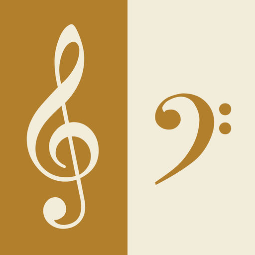

Music: Language We All Speak
Music is one of the human species' relatively few universal abilities. Without formal training, any individual, from Stone Age tribesman to suburban teenager, has the ability to recognise music and, in some fashion, to make it. Why this should be so is a mystery. After all, music isn't necessary for getting through the day, and if it aids in reproduction, it does so only in highly indirect ways. Language, by contrast, is also everywhere - but for reasons that are more obvious. With language, you and the members of your tribe can organise a migration across Africa, build reed boats and cross the seas, and communicate at night even when you can't see each other. Modern culture, in all its technological extravagance, springs directly from the human talent for manipulating symbols and syntax.
Scientists have always been intrigued by the connection between music and language. Yet over the years, words and melody have acquired a vastly different status in the lab and the seminar room. While language has long been considered essential to unlocking the mechanisms of human intelligence, music is generally treated as an evolutionary frippery - mere "auditory cheesecake", as the Harvard cognitive scientist Steven Pinker puts it.
Section B
But thanks to a decade-long wave of neuroscience research, that tune is changing. A flurry of recent publications suggests that language and music may equally be able to tell us who we are and where we're from - not just emotionally, but biologically. In July, the journal Nature Neuroscience devoted a special issue to the topic. And in an article in the 6 August issue of the Journal of Neuroscience, David Schwartz, Catherine Howe, and Dale Purves of Duke University argued that the sounds of music and the sounds of language are intricately connected.
To grasp the originality of this idea, it's necessary to realise two things about how music has traditionally been understood. First, musicologists have long emphasised that while each culture stamps a special identity onto its music, music itself has some universal qualities. For example, in virtually all cultures, sound is divided into some or all of the 12 intervals that make up the chromatic scale -that is, the scale represented by the keys on a piano. For centuries, observers have attributed this preference for certain combinations of tones to the mathematical properties of sound itself.
Some 2,500 years ago, Pythagoras was the first to note a direct relationship between the harmoniousness of a tone combination and the physical dimensions of the object that produced it. For example, a plucked string will always play an octave lower than a similar string half its size, and a fifth lower than a similar string two thirds its length. This link between simple ratios and harmony has influenced music theory ever since.
Section C
This music-is-math idea is often accompanied by the notion that music, formally speaking at least, exists apart from the world in which it was created. Writing recently in The New York Review of Books, pianist and critic Charles Rosen discussed the long-standing notion that while painting and sculpture reproduce at least some aspects of the natural world, and writing describes thoughts and feelings we are all familiar with, music is entirely abstracted from the world in which we live. Neither idea is right, according to David Schwartz and his colleagues. Human musical preferences are fundamentally shaped not by elegant algorithms or ratios but by the messy sounds of real life, and of speech in particular – which in turn is shaped by our evolutionary heritage. "The explanation of music, like the explanation of any product of the mind, must be rooted in biology, not in numbers per se," says Schwartz.
Schwartz, Howe, and Purves analysed a vast selection of speech sounds from a variety of languages to reveal the underlying patterns common to all utterances. In order to focus only on the raw sounds, they discarded all theories about speech and meaning, and sliced sentences into random bites. Using a database of over 100,000 brief segments of speech, they noted which frequency had the greatest emphasis in each sound. The resulting set of frequencies, they discovered, corresponded closely to the chromatic scale. In short, the building blocks of music are to be found in speech.
Far from being abstract, music presents a strange analogue to the patterns created by the sounds of speech. "Music, like visual arts, is rooted in our experience of the natural world," says Schwartz. "It emulates our sound environment in the way that visual arts emulate the visual environment." In music we hear the echo of our basic sound-making instrument - the vocal tract. The explanation for human music is simpler still than Pythagoras's mathematical equations: We like the sounds that are familiar to us - specifically, we like the sounds that remind us of us.
This brings up some chicken-or-egg evolutionary questions. It may be that music imitates speech directly, the researchers say, in which case it would seem that language evolved first. It's also conceivable that music came first and language is in effect an imitation of song - that in everyday speech we hit the musical notes we especially like. Alternately, it may be that music imitates the general products of the human sound-making system, which just happens to be mostly speech. "We can't know this," says Schwartz. "What we do know is that they both come from the same system, and it is this that shapes our preferences."
Section D
Schwartz's study also casts light on the long-running question of whether animals understand or appreciate music. Despite the apparent abundance of "music" in the natural world - birdsong, whalesong, wolf howls, synchronised chimpanzee hooting - previous studies have found that many laboratory animals don't show a great affinity for the human variety of music making.
Marc Hauser and Josh McDermott of Harvard argued in the July issue of Nature Neuroscience that animals don't create or perceive music the way we do. The fact that laboratory monkeys can show recognition of human tunes is evidence, they say, of shared general features of the auditory system, not any specific chimpanzee musical ability. As for birds, those most musical beasts, they generally recognise their own tunes - a narrow repertoire - but don't generate novel melodies like we do. There are no avian Mozarts.
But what's been played to animals, Schwartz notes, is human music. If animals evolve preferences for sound as we do - based upon the soundscape in which they live - then their "music" would be fundamentally different from ours. In the same way our scales derive from human utterances, a cat's idea of a good tune would derive from yowls and meows. To demonstrate that animals don't appreciate sound the way we do, we'd need evidence that they don't respond to "music" constructed from their own sound environment.
Section E
No matter how the connection between language and music is parsed, what is apparent is that our sense of music, even our love for it, is as deeply rooted in our biology and in our brains as language is. This is most obvious with babies, says Sandra Trehub at the University of Toronto, who also published a paper in the Nature Neuroscience special issue.
For babies, music and speech are on a continuum. Mothers use musical speech to "regulate infants' emotional states", Trehub says. Regardless of what language they speak, the voice all mothers use with babies is the same: "something between speech and song". This kind of communication "puts the baby in a trancelike state, which may proceed to sleep or extended periods of rapture". So if the babies of the world could understand the latest research on language and music, they probably wouldn't be very surprised. The upshot, says Trehub, is that music may be even more of a necessity than we realise.
Questions 1-5
Reading Passage has five sections A-E.
Choose the correct heading for each section from the list of headings below.
Write the correct number i-viii in boxes 1-5 on your answer sheet.
Questions 6-12
Look at the following people (Questions 6-12) and the list of statements below.
Match each person with the correct statement.
Write the correct letter A-G in boxes 6-12 on your answer sheet.
6 Steven Pinker
7 Musicologists
8 Greek philosopher Pythagoras
9 Schwartz, Howe, and Purves
10 Marc Hauser and Josh McDermott
11 Charles Rosen
12 Sandra Trehub
List of Statements
A Music exists outside of the world it is created in.
B Music has a universal character despite cultural influences on it.
C Music is a necessity for humans.
D Music preference is related to the surrounding influences.
E He discovered the mathematical basis of music.
F Music doesn't enjoy the same status of research interest as language.
G Humans and monkeys have similar traits in perceiving sound.
Questions 13-14
Choose the correct letter A, B, C or D.
Write your answers in boxes 13-14 on your answer sheet.
13 Why was the study of animal music inconclusive?
A Animals don’t have the same auditory system as humans.
B Tests on animal music are limited.
C Animals can’t make up new tunes.
D There aren’t enough tests on a wide range of animals.
14 What is the main theme of this passage?
A Language and learning
B The evolution of music
C The role of music in human society
D Music for animals
---End of the Test---
Please Submit to view your score, solution and explanations.